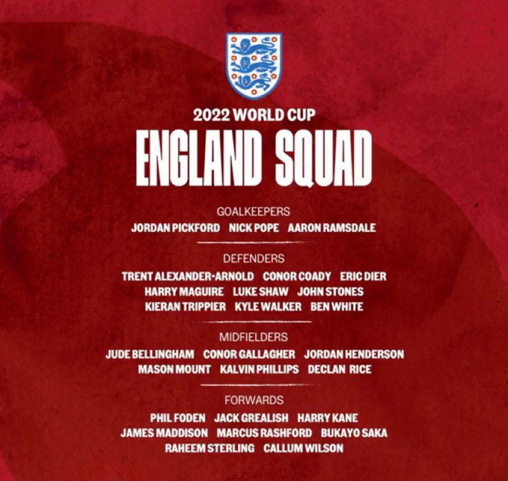

Squad Reaction - England

The big one I was actually waiting for. My expectations for Southgate were low but wow he absolutely went even low. Heavy imbalance, too many out-of-form players, some fatigue and dropping people who you would rather build the team around. It’s an absolute joke how the FA(Football Association) is allowing this League 1(Tier 3 of English football) coach even manage a bloody NATIONAL TEAM. The worst part of it is they are scared to hire anyone foreign. Anyways, the bottom line is it’s sad seeing a golden generation of attacking talent being wasted by a very conservative coach. Alright anymore and this post will be very big so let’s decipher the lineup and you bet your top dollar I am doing a best-ever England lineup as well.
In goal, I am fine with the picks of Pickford, Pope and Ramsdale with Pickford being the de facto starter. At the back I am certain it’s a back 3 of Dier, Maguire and Stones. On the left Shaw is mostly a lock and on the right, I would trust Trippier based on his form for Newcastle. Going into midfield, it picks itself with Rice and Bellingham. Going forward, the left will mostly be between Sterling and Rashford. I would trust Rashford on form and Foden or Saka on the right with Kane leading the line.
The lineup will look something like this:
Here are a few things to note:
- White was picked due to injuries to James and Chilwell
- Only 1 LB and 5 RBs
- 5 CAMs for a formation that does not use a CAM
- No different CB like Tomori or even Guehi
- Bellingham only one outside England who is picked
- No James Ward-Prowse despite being in amazing form
- Kane is tired and his only backup is Wilson. No Toney or Tammy Abraham
This is what I would have done:
- Picked Tomori because he is a modern CB to partner Stones
- Picked JWP on his amazing form
- Picked Toney and Abraham along with Wilson and drop people like Grealish and Philips since they have hardly played and one of them was injured for a long time.
- Switch to a 4 back formation to actually make use of the attacking talent
This is how the lineup would look like: